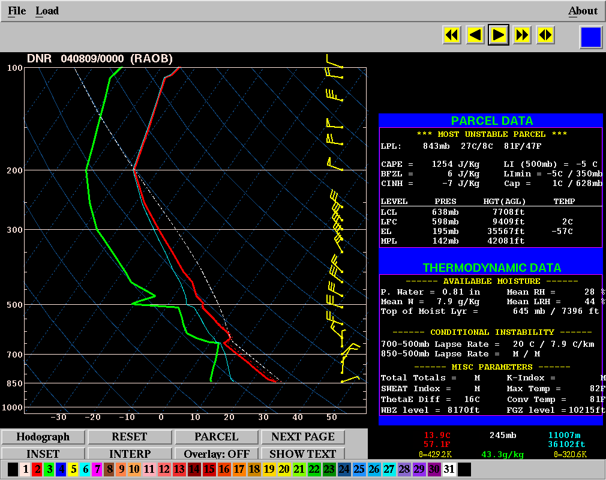
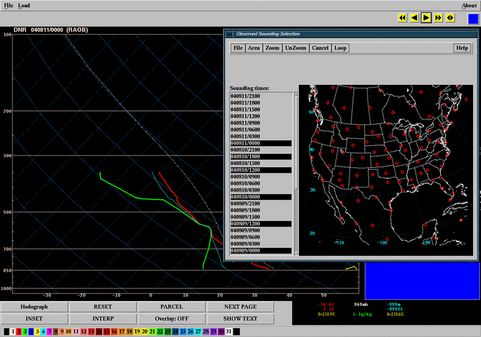
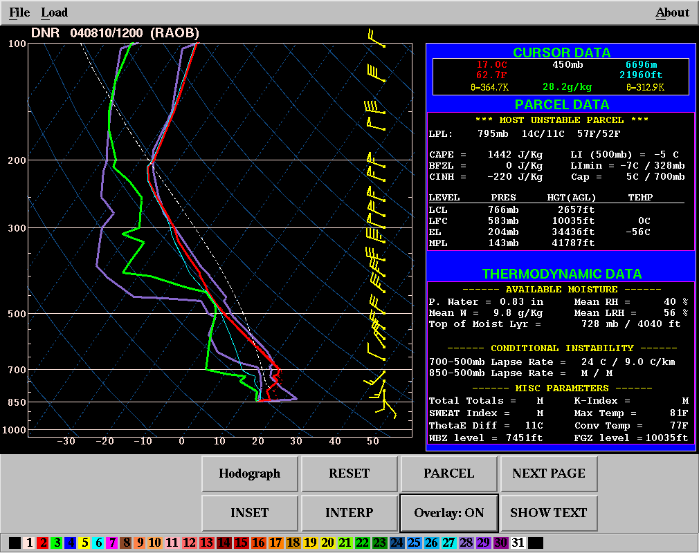

Current functionality allows the user to overlay a previously plotted sounding with a new sounding from any source or time. The last sounding data is copied from the SNDG array to SNDG2 array. The old sounding can not be edited, and no information about the station/time/source is maintained or displayed. The overlayed sounding is drawn in purple as shown below. No time matching is attempted. Common uses would be to show how the atmosphere at a location has modified between observed sounding times, to compare model soundings at the same time from different initializations or models, comparison between model forecast and observation, etc.
How should overlay be handled with animation?
